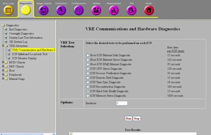
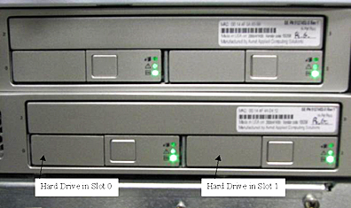

Diagnostics > VRE Subsystem > VRE Communication and Hardware Diagnostic
Figure 1. VRE Hardware Diagnostics

Purpose
The purpose of this diagnostic is to verify the SMART health
status for both hard disks on an ICN. SMART refers to the Self-Monitoring
Analysis and Reporting Technology system present on the ICN hard drives.
SMART contains information about hard drive parameters, which can
be used to predict failures.
Components Tested
ICN Hard Disks - Hard drives are not replaceable in dedicated
ICNs.
Figure 2. Silver SUN ICN Hard Drives

Requirements
The ICN is turned on and has at least one network connection
for the ICN motherboard Ethernet port to the Host.
Block Diagrams
Figure 3. System Cabinet and GOC Diagram
Test Sequence
Select the ICN Hard Disk Health diagnostic
from the VRE Communications and Hardware Diagnostics screen.
Click Run.
Note:
After Run is clicked, do not click
anywhere else in the Common Service Desktop until the test is complete.
To abort the test prior to its completion, click Stop.
Verify that the ICN passes the diagnostic
by reviewing the status in the Test Results table.
Expected Results
This diagnostic has either a Passed or Failed status. If the
diagnostic failed, review the error log and corresponding extended
error messages for subsequent actions. Additional responses to the
diagnostic's failed result are outlined in the table below.
Table 1. Diagnostic Results
Result
Description
GE
Field Action
Passed
ICN passed the diagnostic.
No further action required.
Failed
ICN failed the diagnostic.
Verify the ICN is turned on.
Go to ICN Identification to identify the ICN (Utilities > Toolbox > VRE > ICN Identification).
Verify that the Ethernet switch
is turned on.
If the diagnostic fails after a second
attempt, run the ICN Hard Disk Stress diagnostic (Diagnostics > System Function > Recon > VRE
Hardware Diagnostics).
If the diagnostic fails, check the
hard disk. Look at the System Error Log for the corresponding error
message. This contains the slot number location of the hard drive.
Go to ICN Identification to identify the ICN (Utilities > Toolbox > VRE > ICN Identification).
If the diagnostic succeeds, rerun the
ICN Hard Disk Health diagnostic.
If the diagnostic fails after a third
attempt, run the ICN Hard Disk Drive Integrity diagnostic (Diagnostics > System Function
> Recon > VRE Hardware Diagnostics).
Note:
The ICN Hard Disk Integrity diagnostic takes about 85
minutes to complete.
If the ICN Hard Disk Integrity diagnostic
fails, replace the hard disk. Look at the System Error Log for the
error message. This contains the slot number location of the hard
drive. Go to ICN Identification to identify the ICN (Utilities > Toolbox > VRE > ICN Identification).
If the diagnostic succeeds, rerun the
ICN Hard Disk Health diagnostic.
If the diagnostic fails again,
replace the hard disk. Look at the System Error Log for the error
message. This contains the slot number location of the hard drive.
Go to ICN Identification to identify the ICN (Utilities > Toolbox > VRE > ICN Identification).
Note:
If the ICN Ethernet port/cables are bad, all the tests
for that ICN may fail. This does not apply to the IPMI test, which
has a separate Ethernet cable.
The current product configuration has redundant motherboard
Ethernet connection for each ICN.